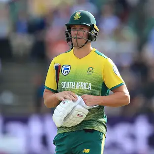
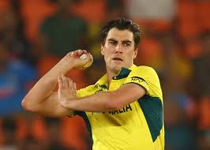

Virat Kohli

A spunky, chubby teenager with gelled hair shot to fame after leading
India to glory in the Under-19 World Cup at Kuala Lumpur in early 2008.
In an Indian team filled with saint-like icons worthy of their own
hagiographies, Virat Kohli, with his most un-Indian, 'bad-boy'
intensity, would clearly be an outcast.Career Information Test debutvs
West Indies at Sabina Park, Jun 20, 2011Last Testvs New Zealand at
Maharashtra Cricket Association Stadium, Oct 24, 2024ODI debutvs Sri
Lanka at Rangiri Dambulla International Stadium, Aug 18, 2008Last ODIvs
Sri Lanka at R.Premadasa Stadium, Aug 07, 2024T20 debutvs Zimbabwe at
Harare Sports Club, Jun 12, 2010Last T20vs South Africa at Kensington
Oval, Jun 29, 2024IPL debutvs Kolkata Knight Riders at M.Chinnaswamy
Stadium, Apr 18, 2008Last IPLvs Rajasthan Royals at Narendra Modi
Stadium, May 22, 2024ProfileA spunky, chubby teenager with gelled hair
shot to fame after leading India to glory in the Under-19 World Cup at
Kuala Lumpur in early 2008. In an Indian team filled with saint-like
icons worthy of their own hagiographies, Virat Kohli, with his most
un-Indian, 'bad-boy' intensity, would clearly be an outcast. Grind
through the ranks He soon joined the senior Men in Blue in Sri Lanka,
come August 2008. In the absence of the regular openers, Virat Kohli was
given a chance to open the batting in the ODI series. He played some
commendable knocks in his extended run as an opener, as India went on to
win the ODI series. However, the established and formidable pair of
Tendulkar and Sehwag kept Kohli out of the team.
AB Devillers

Some cricketers' rise to the top constitutes hours of perseverance and
hardwork, and others' include, predominantly, an abundance of talent and
natural ability. Abraham Benjamin de Villiers is that player you create
in a computer game, who has both the attributes set to maximum, and then
some.de Villiers has risen through the ranks to become one of the
world's finest batsmen, most versatile batsmen, across all formats. When
on song, de Villiers has the ability to take any bowling attack apart
with his wide array of strokes on either side of the wicket. If his
orthodoxy is compact and aesthetically pleasing, the South African
avant-garde's trailblazing innovation often rendered bowlers
speechless.His supreme ability caught the eye of the selectors as he was
fast-tracked into the national squad as a raw 20-year-old in 2004. He
made his Test debut in the home series against England in 2004 and
exhibited his class with a sublime 52 in just his fourth innings with
the bat, saving South Africa from what looked like a certain defeat. He
also registered his first Test century in the series - a fluent 109 on
his home ground in Centurion. In short, he'd wasted no time and had
shown the world his capability immediately.
Brendon Mccullum
'Brash' - that is the word Brendon McCullum, easily the greatest of all
the Kiwi glovesmen, and one of their finest batsmen, uses to define
himself.Adam Gilchrist and MS Dhoni might be the first names that come
to mind when we discuss pyrotechnics-prone wicketkeepers, but this Kiwi
hunk would definitely be a prime contender. Younger son of a First-Class
player of Otago, this explosive stumper from Dunedin, New Zealand, was
first selected for his country, not surprisingly, more on the back of
his batting rather than his wicket-keeping skills. Predominantly
favouring the leg-side, especially the cow corner, McCullum has made a
name for himself by piling on quick runs as an opener in the 50 and
20-over format of the game.In the longer version of the game, his first
few centuries came against lesser opponents like Zimbabwe and Bangladesh
and, except for a 96 against England at Lord's, he didn't have any
strong performances against the heavyweights to justify his place in the
side. But all that changed in the fifth year of his career, when he
racked up his third Test hundred against India in quick time at Napier
in 2009. McCullum, followed it up by amassing a double ton laced with a
blend of composure and savagery against India in Hyderabad. In 2010,
McCullum, decided to relinquish the keeping mitts to focus on his
batting.
Aliaster Cook
'15,000 Test runs and 50 Test centuries are not beyond him' - Sunil
Gavaskar said about Alastair Cook.It is not easy for a batsman to
receive such high praise from a former cricketer, especially when the
concerned persons are from different countries. The fact that those
words came from a batsman who is considered one of the best openers Test
cricket has ever seen makes it even praiseworthy. Such is Cook’s
reputation in World Cricket at the moment that, at the age of 28, he is
already considered as a legend, or at least one in the making.It is
never easy being a Test opener in the country of England – the new ball
generally swings rapidly and it takes a great deal of quality for any
opener to survive, let alone score runs consistently. But Cook is
blessed with a robust technique, temperament and the patience required
to counter the conditions even when they are not conducive to batting,
especially at the top order.
Pattrick Cummins

A fiery Pat Cummins set the international arena ablaze with his Test
debut in 2011 on a juicy Wanderers pitch. A seven-wicket match haul
including a six-fer in the second innings gave Australia a chaseable
score which they eventually gunned down, albeit by a narrow margin.
Amidst the victory celebrations, the talk was all about this exciting
fast bowler who had all the weapons a pacer needed. He was impeccably
complete, that too at such an early age which promised so much. Tragedy
struck though, which meant that he didn't play a single Test match for
about six years.Cummins' has no real weakness in his skill set but a
fragile body meant that he couldn't capitalize on the sensational debut
that he had. Although he did feature in white-ball cricket during this
Test hiatus, there too he wasn't a regular starter with injuries
inevitably consuming him at frequent intervals. It did seem like such a
powerhouse of talent would end up combusting in the flame of injuries.
However, the 2016-17 season saw Cummins upping his fitness levels in a
big way. After a few years of constant preparation, it seemed like the
body was finally starting to be stable.